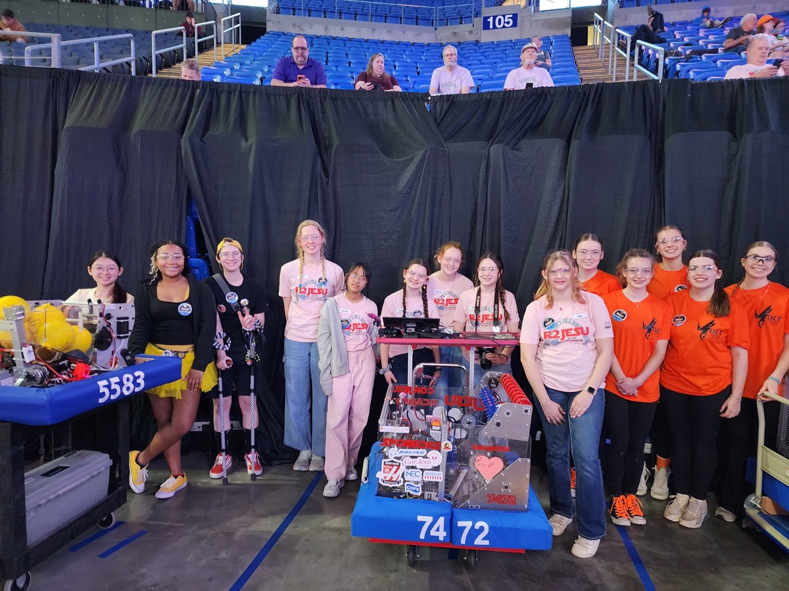
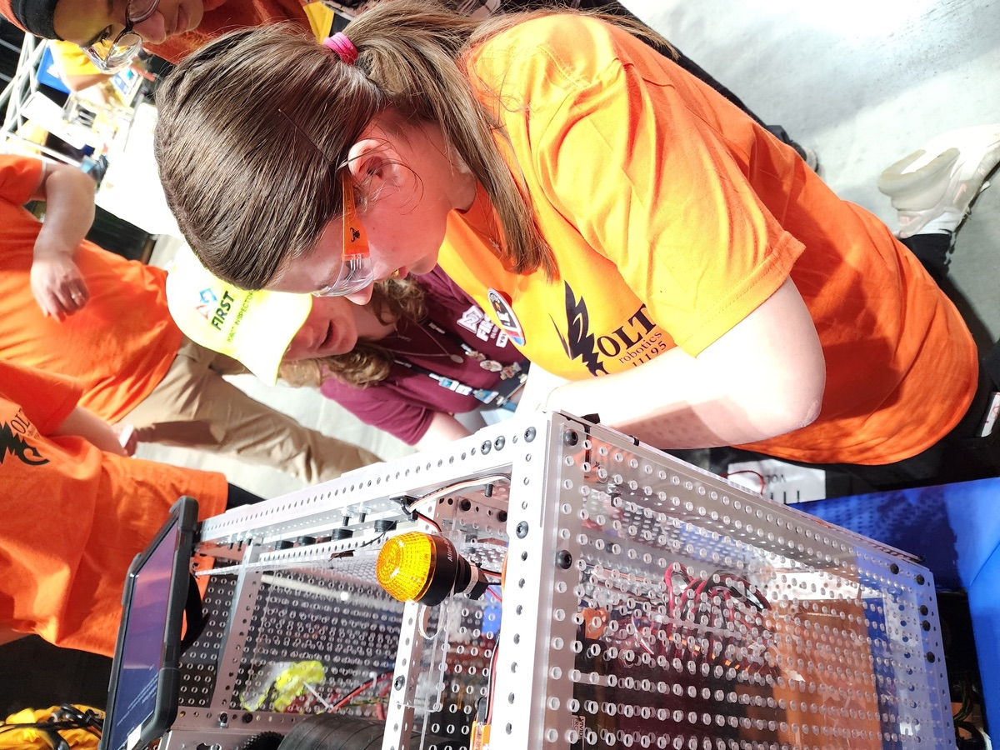
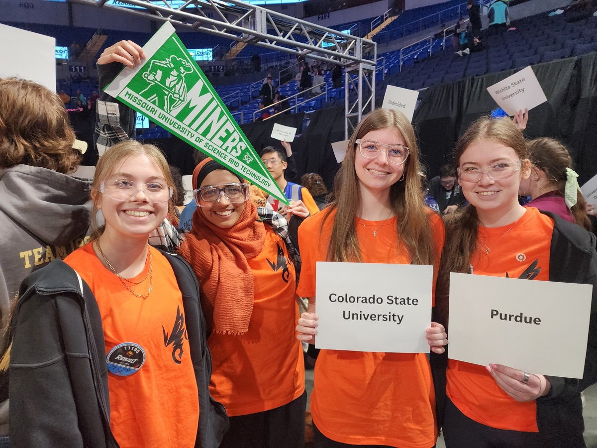

A rookie FRC team years in the making.
Robotics sounds intimidating until a girl sees someone who looks like her actually doing it. Not watching a robot, but building one and explaining how it works. That changes things fast. VOLT was built for that moment, and for what comes after it.
Our rookie FRC team grew from two all-girls FTC programs, Polytechnic Puzzle Pieces #16751 and Gear Girls #23469. This season, students carried that work forward onto our FRC season, drawing from students representing seven schools across the area.

To make the jump from FTC to FRC, we built out student-led subteams across every discipline. Mentors are there, but the students lead. If something goes wrong, they figure out why. If it works, they know exactly what they did to make it happen.
Design/CAD, Electrical, Mechanical, Instrumentation & Integration, Software, and Maintenance & Testing.
Outreach & Community Engagement, Documentation, Scouting & Research, Safety, Media & Marketing, Finance, and Project Management.
Robot and Business each have a student captain, and so does every subteam. A student can join several teams but captain only one.

We took a pragmatic approach to our rookie year, starting from a proven REV starter-bot foundation and improved it from there. That kept our students on the basics first: build something reliable, wire it safely, get real drive practice, and learn how FRC works as a team. Along the way they built tools and habits that carry into next season.
Our mentors act as guides and subject-matter experts across every discipline of FRC, sharing professional experience and coaching students in problem-solving.
Software Engineering Manager at Boeing with 26+ years in IT and 11 years as a FIRST volunteer across FLL Jr., FLL, and FTC.
Special education teacher specializing in dyslexia intervention and a veteran FIRST coach, bringing strong educational and organizational leadership.
Manufacturing Engineer at Boeing and FTC alumna with B.S. and M.S. degrees in Mechanical Engineering from Missouri S&T.
Software developer for the U.S. Air Force with multiple years of FRC mentoring experience in software and robot control systems.
Design Engineer at Permobil and FRC alumna with a Master's in Biomedical (Biomechanics) Engineering from Marquette University.
Software Engineering Manager at Boeing, bringing years of software engineering and product manager experience to our team.
Instrumentation & Electrical Team Lead at Phillips 66, guiding students on sensor usage, wiring, controls, and instrumentation.
Superintendent of Wing Innovation at Scott AFB (AFWERX), guiding students in 3D printing, additive manufacturing, and rapid prototyping.
This year we have four graduating seniors, and all four are pursuing STEM majors. For this senior class, FIRST helped support a 100% continuation into STEM fields.
